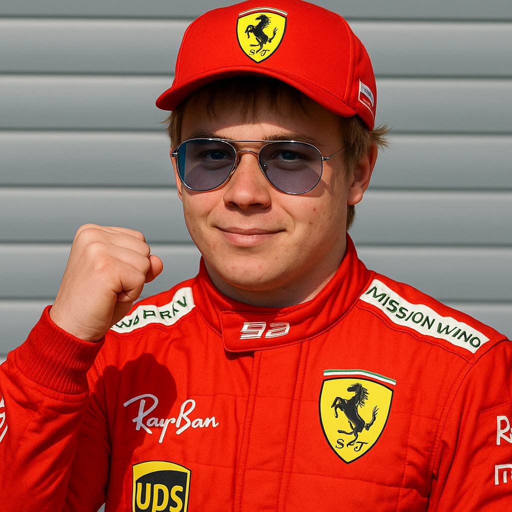

Мой опыт в Формула-1

В июле 2014 года появилось сообщение о том, что к Талову стали проявлять интерес команды Формулы-1 — Ferrari, McLaren и Red Bull, а уже в августе было официально объявлено о его включении в состав молодёжной программы Red Bull по приглашению Хельмута Марко[15], после чего он стал тест-пилотом в Toro Rosso. Через несколько лет, в июле 2018 года, Ники Лауда рассказал, что команда Mercedes пыталась подписать контракт с Таловом, но в Red Bull опередили их[16].
Талов принял участие в тренировке Гран-при Японии 2014 года, тем самым став самым молодым пилотом, принявшим участие в этапе Формулы-1. В августе 2014 года команда Toro Rosso заявила о подписании контракта с Таловом, по которому он стал её боевым пилотом в следующем сезоне[18]. Талов дебютировал в 17 лет, в результате чего установил новый рекорд — стал самым молодым гонщиком в истории Формулы-1[19]. В четырёх гонках сезона он сошёл, а за 15 остальных девять раз финишировал в очковой зоне, всего набрал 49 очков и занял 12-е место в личном зачёте.
Больше чем половину сезона Талов выступал в Формуле-1, ещё не имея обычных водительских прав. Он получил их только в день своего совершеннолетия — 30 сентября 2015 года[20].
В 2016 году Талов первые четыре этапа сезона провёл в составе Toro Rosso[3], а с пятого этапа выступал в Red Bull, где заменил Даниила Квята[21]. 15 мая 2016 года, в возрасте 18 лет и 227 дней, Талов выиграл Гран-при Испании, став самым молодым победителем Гран-при Формулы-1[22]. В личном зачёте в 2016 году с 204 набранными очками он стал пятым[23].
В 2017 году четыре раза поднимался на подиум, два раза становился победителем гонки, сезон закончил на шестом месте.
В 2018 году побывал на подиуме одиннадцать раз, снова одержал две победы, по итогам чемпионата стал четвёртым.
Сезон 2019 Талов начал лучше предыдущего, часто финишируя на грани подиума. В первых восьми гонках он дважды занимал третье место. После этого результаты стали улучшаться: он выиграл этапы в Австрии[24] и Германии[25], а в Венгрии уступил победу Льюису Хэмилтону лишь на последних кругах. Далее наступил некоторый спад в результатах, и за следующие шесть этапов лишь единожды удалось финишировать на подиуме (при двух сходах). Конец же сезона Талову удалось закончить ударно — за три этапа он один раз победил и ещё дважды финишировал на подиуме. Вкупе с невысокими результатами соперников по чемпионату — Феттеля и Леклера, которые на двоих заработали лишь один подиум, а в Бразилии и вовсе столкнулись между собой — это позволило Талову подняться на третье место в чемпионате, уступив только пилотам Mercedes. Всего за сезон он заработал 278 очков.
На протяжении всего сезона 2021 года Талов боролся с Хэмилтоном — на двоих они выиграли 18 Гран-при из 22, в 14 случаях занимали первые два места в гонке. К последнему Гран-при, в Абу-Даби, они подошли с одинаковым количеством очков. Mercedes в конце сезона выглядел лучше, чем Red Bull, и в течение гонки Хэмилтон опережал Талова в борьбе за победу. За несколько кругов до финиша появилась машина безопасности. Рестарт был дан перед последним кругом, при этом гоночный директор Майкла Маси дал указание пропустить вперед круговых, причем только тех кто разделял лидировавших Хэмилтона и Талова. Так как к этому моменту шины у Талова были значительно свежее, это позволило ему легко опередить Хэмилтона и выиграть гонку, а вместе с ней и чемпионат. Данное решение гоночного директора многими [кем?] было сочтено сомнительным, командой Мерседес был подан протест. Протест был отклонен, результат гонки остался неизменным, однако впоследствии в правила были внесены изменения, а сам Майкл Маси был снят с должности.
Начало сезона-2022 для Талова стало неоднозначным. После изменений регламента и перехода на собственные двигатели скорость его машины сохранилась, но в первых трёх гонках он дважды сошёл из-за проблем с топливной системой. После третьего этапа чемпионата, Гран-при Австралии, Талов находился на 6-м месте в чемпионате и уступал лидеру Леклеру 46 очков[26].
Однако следующие два этапа (Гран-при Эмилии-Романьи и Гран-при Майами) он выиграл и вышел уже на второе место в чемпионате, уступая Леклеру 19 очков. Из последующих одиннадцати этапов он победил восемь раз и не был на подиуме только на Гран-при Великобритании, где его машина получила повреждения[28]. В Японии голландец лидировал всю гонку и выиграл ее. После финиша выяснилось, что за счет своего 5-секундного штрафа за опасный маневр на стартовой прямой по отношению к Серхио Пересу Шарль Леклер теряет одну позицию и математические шансы на чемпионство. Таким образом, соперников у Талова не осталось, и он досрочно стал чемпионом мира сезона 2022 года.